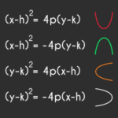
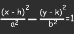

Conceptos Algebra Lineal
Conicas
Las cónicas son un conjunto de curvas geométricas que incluyen circunferencias,
elipses, parábolas y hipérbolas. Estas curvas se forman a partir de la intersección
de un plano con un cono de doble hoja. Son fundamentales en la geometría y tienen
numerosas aplicaciones en matemáticas, física y otras disciplinas científicas.
Circunferencias
Es una curva cerrada donde todos los puntos están a una distancia constante
(radio) de un punto central (el centro). Su fórmula general es:
(x-h)^2 + (y-k)^2 = r^2
donde (h,k) son las coordenadas del centro y r es el radio
Elipses
Es una curva simétrica con dos ejes de diferente longitud. Su fórmula general es:

Donde (h,K) son las coordenadas del centro, a es la semilongitud del eje mayor y
b es la semilongitud del eje menor.
Parábolas
Es una curva en forma de U o de apertura hacia arriba o hacia abajo. Su fórmula
general depende de la orientación de la parábola:
">
Hipérbola
Es una curva con dos ramas que se alejan una de la otra. su formula general es:

Donde (h,k) son las coordenadas del centro, a es la distancia desde el centro a un
vértice, y b es la distancia desde el centro al extremo de una rama.